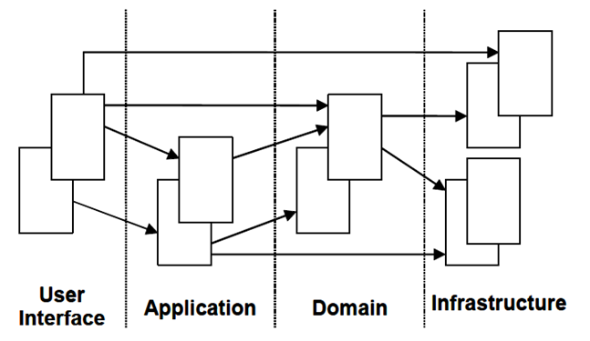

0. 前言
实习期间，组长布置的作业。
1. 简介
2003年，Eric Evans 在 《Domain-Driven Design: Tackling Complexity in the Heart of Software》 一书中提出了 领域驱动设计（DDD） 的重要概念。
如果说 DevOps 是一种软件开发过程的方法，那 DDD 就是一种软件架构设计的方法。
DDD 本质是面向对象分析的方法论，它的革命性在于：利用面向对象的特性，以业务为核心驱动，而不是传统的数据库驱动开发；同时，不同于传统的贫血模型，它提倡充血模型。
此处先简单介绍一下贫血模型和充血模型：
1.1. 贫血模型
贫血模型最广泛的应用，应该是在 Spring 框架中，也就是我们常见的 controller/service/model/dao 分层。
这种模型的特点在于：
- 数据和DB操作分离；
- 我们在 model 中只实现 getter、setter 方法，而将业务逻辑交给 service 层实现。
可以看出，这种模型的缺点在于：
- 它将本该聚集在 model 中的业务逻辑泄漏到了 service 中，导致 model 只是一个存放数据的容器，丧失了面向对象的抽象性，其本质依然是一种面向过程的编程；
- 而且随着项目的演进，sevice 层会十分沉重，业务逻辑会分散到不同的 service 中，代码变得越来越难以理解，并丧失扩展性。
1.2. 充血模型
贫血模型的对立面自然就是充血模型了。
充血模型，提倡将业务逻辑放入 model （领域模型）中，遵循面向对象原则，每个 model 负责自己的业务逻辑。
体现在项目结构中，即是根据业务进行分包。比如：一个订单系统中，最重要的 model 是 product 和 order ，那么项目顶层应该是 product 和 order 两个包，而不是 controller/service/model/dao 等。
2. 基本概念
领域驱动设计DDD主要包含两方面：战略设计和战术设计。
战略设计偏向于软件架构，主要关注的是领域和边界上下文的划分。而战术设计偏向于编码实现，主要关注如何用代码实现该领域模型。
通过这两个方面，我们可以更好地理解什么是领域驱动设计：
- 领域驱动领域模型的设计；
- 领域模型驱动代码的实现。
2.1. 战略设计
先简单介绍战略设计中的部分概念：
领域：是一种划分，比如：电商平台属于电商领域、金融平台属于金融领域。当然，每个大领域下，还会有许多小领域，比如电商领域下还有：商品、订单、库存、会员等领域。
领域专家：要想理解某个领域的知识，那么我们得找一个对该领域十分熟悉的人，那这个人就叫做领域专家。
领域通用语言：有时候领域专家并不一定是软件开发人员，那么为了方便软件人员与领域人员的交流，就要规定一门领域通用语言。
在战略设计中，一旦系统的主要目标确定，那我们首先就要理解领域知识，让自己成为领域专家；其次，对于一个大领域，我们还需要将其划分成多个小领域；最后，我们还必须再进一步细化每个子领域，比如：明确每个子领域的核心关注点、每个领域之间的关系等。
战略设计就相当于软件开发过程中的需求分析阶段，但DDD更关注于业务而不是数据。
2.2. 战术设计
当战略设计完大致的领域模型后，就该进行战术建模了。
依旧先简单介绍领域模型中的部分概念：
- 实体：具有生命周期和唯一标识的对象。例如：人就是一个实体，每个人都具有唯一标识（身份证）。
- 值对象：用于对事务描述而没有唯一标识的对象。例如：颜色信息、地址信息等。
- 聚合：一些对象的集合，这些对象之间具有高聚合的关系，它们作为一个整体被外界访问，聚合应该尽可能小。
- 聚合根（Aggreate Root）：聚合中最主要的对象，例如：会员管理系统，会员便是一个聚合根。同时，聚合根是业务逻辑的主要载体。
- 领域服务：一些不能归属到任一对象的业务逻辑。
- 仓库（Repository）：将领域模型中的对象持久化到数据库中。
结合上述概念，战术设计的大致步骤为：
- 分析领域模型，从中找出实体、值对象、领域服务；
- 找出聚合边界和聚合根；
- 为聚合配备仓库；
- 在工程中实践领域模型，并在实践中检验模型的合理性，倒推模型中不足的地方并重构；
在这过程中，还需要考虑软件设计原则及性能。
当领域建模大致完成后，就需要对系统进行分层架构了。DDD中有如下的经典分层架构：

- 用户接口层：主要用于向用户展示信息，并接受用户指令。
- 应用层：相当于 controller 层，对外提供接口，对内调用领域层，不包含业务逻辑，是领域模型的门面。
- 领域层：核心层，领域模型所在之处。
- 基础设施层：为其他层提供通用的技术能力，如：层间的通信、持久化机制等。
在领域层中，包含着系统中的各领域模型，它们以单独的模块存在，相互之间高内聚低耦合。同时，它们也是上文所提到的充血模型。
3. 总结
传统的软件开发习惯，总是从设计数据表开始的，而且大多都采用 controller/service/model/dao 的分层结构，我之前所接触到的项目，基本都是如此。
这种设计开发模式，最大的问题便在于：一旦前期数据表设计不合理，后期的改动则会非常大。
而领域驱动设计最大的优势便在于：软件设计初期关注的是业务，而不是数据表，数据持久化只是设计后期的一个考虑。
就像阿里盒马领域驱动设计实践博客中作者所说的：
假设你的机器内存无限大，永远不宕机，在这个前提下，我们是不需要持久化数据的，也就是我们可以不需要数据库，那么你将会怎么设计你的软件？
脱离了数据库的束缚，面向对象、设计模式等方法是不是可以大展身手了呢？
同时，领域驱动设计所带来的领域划分方法，也与今天的微服务相得益彰。
DDD所提倡的基于业务设计、面向对象分析、基于子领域分治等思想，还是值得借鉴的。
但是我认为，DDD的实践也存在着一些问题，比如：
- 领域建模得到的充血模型，业务逻辑函数集聚在一个聚合根对象中，是否会导致该对象过于臃肿？
- 子领域中，面向对象的设计是否会导致问题复杂化，面向过程是否更加快捷方便，特别是像go这种不擅长面向对象的语言？
- 实体对象如何高效地跟数据库衔接，如何进行复杂的查询？
俗话说，没有最好的只有最合适的。领域驱动设计只是一个流派，并非完美无缺，很多问题可能在实践中才会真正显露出来。就像微服务一样，虽然带来了高内聚低耦合等好处，但也增加了系统的复杂性、带来了服务管理和监控等问题。
在DDD具体的实践中，还需要我们灵活应变。